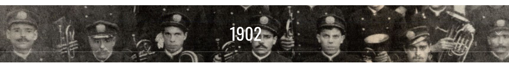
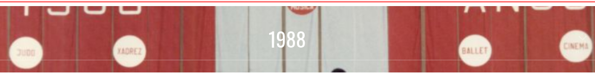
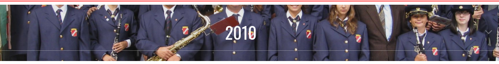
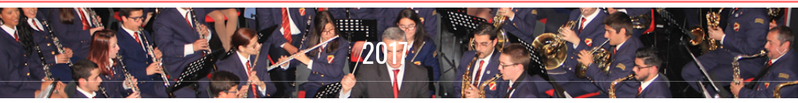

Banda Filarmónica da Academia de Instrução e Recreio Familiar Almadense
A 27 de Março de 1895 nasce a Academia de Instrução e Recreio Familiar Almadense. Um homem do povo, José Maria de Oliveira comerciante e músico amador, que já havia sido tanoeiro de profissão, com um grupo de amigos funda a Academia. É criada uma Escola de Música sob a direção de Artur Ferreira, seu primeiro Maestro, ao lado de uma escola primária. Passado um ano surge a primeira apresentação da Banda composta por 22 figuras.
A partir desta altura jamais será possível travar o crescimento desta coletividade. Uma nova geração de músicos cheios de vontade e conhecimentos prolifera na Academia. A atividade musical dividiu-se em vários ramos: Banda Filarmónica, o Orfeão, o Coro Infantil, o Teatro/Revista, os agrupamentos musicais, dando-se destaque à Orquestra de Saxofones e à Orquestra de Jazz e ainda o famoso Septimino Feminino de Saxofones constituído por 7 jovens, que no seu tempo foram o orgulho desta Casa. A extraordinária atividade musical vivida nas décadas de 1920 a 1960, deve-se a uma plêiade de bons músicos, mas sobretudo ao Maestro Leonel Duarte Ferreira, expoente máximo da vida musical desta coletividade e ao seu irmão o dedicado e fidelíssimo Maestro Hilário dos Santos Ferreira.
O
Septimino Feminino de Saxofones com o Maestro Leonel Duarte Ferreira
O Maestro Leonel Duarte Ferreira
A Banda foi dirigida por Artur Ferreira de Paiva, Castro Vieira, Manuel Inácio da Encarnação, José Lourenço, Francisco Matos, Leonel Duarte Ferreira, Hilário Santos Ferreira, Filipe Sabino da Conceição, António das Neves Ramalho, Manuel Jerónimo e desde 2011 pelo Maestro Francisco Pinto.
Grande parte da história da nossa coletividade pertence à atividade musical, sendo a Banda a embaixadora por excelência e o polo de seu crescimento sustentado durante os 128 anos da sua vida. A ela estão ligados os mais belos momentos de sempre da identidade musical da AIRFA e das suas atuações mais recentes podemos dizer orgulhosamente que mereceu os aplausos e cumprimentos públicos de entidades como o ex-Presidente da República Portuguesa Jorge Sampaio, o Prémio Nobel da Literatura José Saramago e o ex-Presidente da República de Timor-Leste, Xanana Gusmão e atuou em palco, em 2012, com o cantor português António Calvário e, em 2018, com a cantora Rita Guerra.
Clique na data para ver a fotografia
Academia de Instrução e Recreio Familiar Almadense 202
▾
Francisco Pereira Pinto nasceu a 23 de Abril de 1964 em Guimarães. Aos 13 anos de idade começou os seus estudos musicais na filarmónica das Caldas das Taipas. Continuou a desenvolver a sua aprendizagem no Conservatório de Música da Fundação Calouste Gulbenkian em Braga.
Em 1983, fez concurso para admissão na Banda da Guarda Nacional Republicana, onde presentemente tem o posto de sargento-mor.
Concluiu o curso de Clarinete no Conservatório em Lisboa, tendo como professores: António Saiote, Jorge Trindade e Manuel Jerónimo, em Clarinete; Salomé Leal, em Formação Musical; Paulo Brandão, Jorge Peixinho e Eurico Carrapatoso, em Análise e Técnicas de Composição; Francisco Melo, em Acústica; Fernanda Melo, em História da Música e Peres Newton em Música de Câmara.
Frequentou em 1990, em Setúbal um curso de Música de Câmara orientado pela Pianista Olga Prats. Participou em várias orquestras, nomeadamente: Orquestra Sinfónica Juvenil, Orquestra Portuguesa da Juventude, Orquestra das Escolas Particulares e Orquestra "os insólitos". É membro fundador do Quarteto de Clarinetes Chalumeau, onde já actuou por todo o País e Arquipélago dos Açores onde ministrou cursos de aperfeiçoamento de Clarinetistas. Leccionou ainda Clarinete na Academia Luisa Todi em Setúbal e no Conservatório Silva Marques em Alhandra.
Em 2008, foi condecorado pela Câmara Municipal do Seixal com a medalha de mérito cultural. No campo do ensino da Música em Colectividades, dirigiu a Banda da Sociedade Filarmónica Timbre Seixalense, a Banda da Sociedade Filarmónica da Gançaria, a Banda da Sociedade Filarmónica Gualdim Pais de Tomar e a Orquestra do Clube Recreativo da Cruz de Pau. Actualmente dirige a Banda da Associação Desportiva e Recreativa "o Paraíso", em Vale do Paraíso, Azambuja, e a Banda Filarmónica da Academia de Instrução e Recreio Familiar Almadense.
A BANDA NO TEMPO



